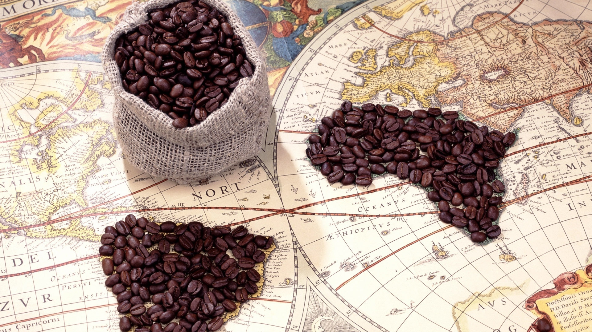

A melhor Cafeteria Da Região!!... Um Pouco Mais Sobre a História Dessa Bebida Tão Apreciada Em Todo Mundo:
O café é uma bebida que possui uma história fascinante e uma origem que remonta a séculos atrás. Conta-se que a descoberta do café ocorreu na região da atual Etiópia, onde viviam os povos Oromo. Segundo a lenda, um pastor chamado Kaldi observou que suas cabras ficavam mais energéticas e ativas após comerem os frutos de uma determinada planta. Curioso, Kaldi decidiu experimentar os frutos e, logo em seguida, sentiu-se revigorado e alerta. Ele compartilhou sua descoberta com os monges de um mosteiro local, que passaram a utilizar a planta para se manterem acordados durante suas longas sessões de oração. A notícia sobre as propriedades estimulantes dos frutos se espalhou rapidamente pela região e, com o tempo, a planta do café começou a ser cultivada em diferentes partes do mundo. No século XV, o café chegou à Península Arábica e foi na cidade de Meca, na atual Arábia Saudita, que surgiram os primeiros locais de encontro e consumo de café. Os cafés se tornaram espaços sociais onde as pessoas se reuniam para conversar, debater ideias e até mesmo fazer negócios. O hábito de tomar café se disseminou pela região e, posteriormente, se espalhou para outras partes do mundo, como a Turquia e a Europa. No século XVII, o café chegou à Europa Ocidental e rapidamente se tornou popular em cidades como Veneza, Paris e Londres. Surgiram as primeiras cafeterias, onde as pessoas podiam desfrutar da bebida em um ambiente agradável e acolhedor. A cultura do café continuou a se desenvolver ao longo dos séculos, com a criação de diferentes métodos de preparo, como a tradicional cafeteira italiana e a máquina de expresso. Hoje em dia, o café é uma das bebidas mais consumidas em todo o mundo, com uma enorme variedade de sabores, aromas e métodos de preparo. As cafeterias são lugares especiais onde as pessoas podem apreciar uma xícara de café, desfrutar de momentos de tranquilidade ou encontrar-se com amigos para compartilhar histórias e experiências. Assim, a história do café é uma jornada fascinante que começou em uma pequena região da Etiópia e se espalhou pelo mundo, conquistando paladares e se tornando um símbolo de encontro e prazer.

Espresso: Um clássico atemporal, o espresso é uma dose concentrada de café, preparado com água quente sob alta pressão. É encorpado, intenso e cheio de sabor, com uma crema sedosa no topo. Cappuccino: Um café popular em todo o mundo, o cappuccino combina café espresso, leite vaporizado e uma camada generosa de espuma de leite cremosa. É uma opção suave e equilibrada, perfeita para começar o dia. Latte: Uma opção cremosa e reconfortante, o latte é feito com café espresso e leite vaporizado, resultando em uma bebida suave e levemente doce. Pode ser aromatizado com xaropes como baunilha, caramelo ou avelã, adicionando um toque extra de sabor. Mocha: Para os amantes de chocolate, o mocha é uma escolha deliciosa. Ele combina café espresso, leite vaporizado, chocolate em pó ou xarope de chocolate e é finalizado com chantilly. É uma opção indulgente e saborosa. Macchiato: Uma opção mais forte e concentrada, o macchiato é um espresso com uma pequena quantidade de leite vaporizado, geralmente servido em uma xícara menor. É uma escolha ousada e intensa para os apreciadores de café.

Croissant recheado: Deliciosos croissants feitos com massa folhada crocante e recheados com queijo, presunto, frango ou até mesmo opções vegetarianas. Uma combinação perfeita de texturas e sabores. Empadas: Empadas caseiras, com massa leve e recheios suculentos, como frango, carne, queijo ou palmito. São salgados ideais para uma refeição rápida ou para saborear enquanto trabalha. Coxinhas: Clássicas e irresistíveis, as coxinhas da C++ffe são uma verdadeira tentação. Com massa macia e recheio de frango desfiado bem temperado, elas são fritas até ficarem douradas e crocantes. Quiches: Quiches são opções versáteis e saborosas. Aqui, você encontrará quiches de diversos sabores, como queijo com espinafre, bacon com cebola caramelizada, cogumelos, entre outros. São ótimos para uma refeição mais leve ou um lanche rápido. Esfihas: Inspiradas na culinária árabe, as esfihas da C++ffe são feitas com massa macia e recheios variados, como carne moída temperada, queijo com tomate, espinafre com ricota e até opções vegetarianas.

Assim como o vinho, o café também pode ser apreciado por suas características sensoriais e não apenas pela cafeína. Um café especial é aquele com grãos selecionados e que tem um equilíbrio perfeito entre aroma, sabor, doçura, corpo, acidez e finalização. Nossos cafés especiais são produzidos em lotes únicos e possuem rastreabilidade até a fazenda produtora e na embalagem você encontra todas as informações daquele lote específico até as características sensoriais.